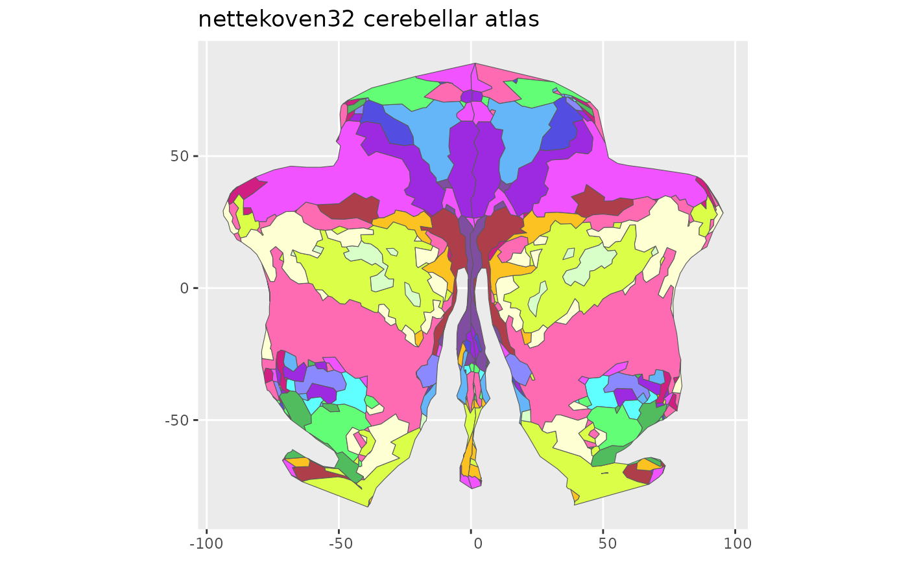
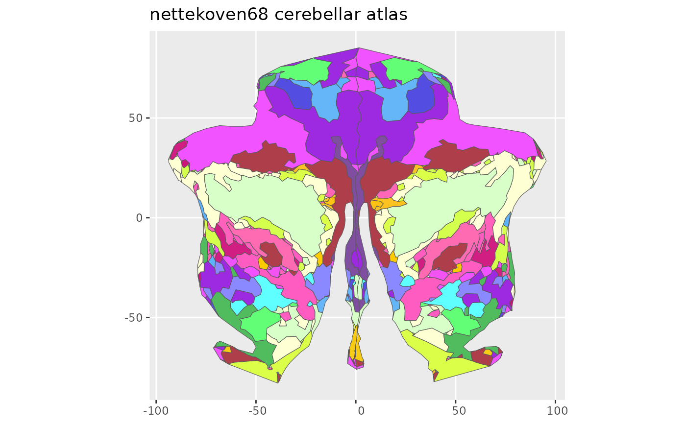

Hierarchical symmetric cerebellar parcellations from Nettekoven et al. (2024). Available as 32-region and 68-region variants. Regions are coded by functional domain: Motor (M), Auditory (A), Default mode (D), Somatosensory (S), with left (L) and right (R) hemispheric labels.
nettekoven32()
nettekoven68()A ggseg.formats::ggseg_atlas object (cerebellar).
Nettekoven C, et al. (2024). A hierarchical atlas of the human cerebellum for functional precision mapping. Nature Communications, 15:8376. doi:10.1038/s41467-024-52371-w
Other ggseg_atlases:
buckner17(),
buckner7(),
ji10(),
mdtb10(),
xue10()
Other cerebellar_atlases:
buckner17(),
buckner7(),
ji10(),
mdtb10(),
xue10()
nettekoven32()
#>
#> ── nettekoven32 ggseg atlas ────────────────────────────────────────────────────
#> Type: cerebellar
#> Regions: 32
#> Hemispheres: midline
#> Views: flatmap
#> Palette: ✔
#> Rendering: ✔ ggseg
#> ✔ ggseg3d (vertices)
#> ────────────────────────────────────────────────────────────────────────────────
#> # A tibble: 32 × 3
#> hemi region label
#> <chr> <chr> <chr>
#> 1 midline M1L midline_M1L
#> 2 midline M2L midline_M2L
#> 3 midline M3L midline_M3L
#> 4 midline M4L midline_M4L
#> 5 midline A1L midline_A1L
#> 6 midline A2L midline_A2L
#> 7 midline A3L midline_A3L
#> 8 midline D1L midline_D1L
#> 9 midline D2L midline_D2L
#> 10 midline D3L midline_D3L
#> 11 midline D4L midline_D4L
#> 12 midline S1L midline_S1L
#> 13 midline S2L midline_S2L
#> 14 midline S3L midline_S3L
#> 15 midline S4L midline_S4L
#> 16 midline S5L midline_S5L
#> 17 midline M1R midline_M1R
#> 18 midline M2R midline_M2R
#> 19 midline M3R midline_M3R
#> 20 midline M4R midline_M4R
#> 21 midline A1R midline_A1R
#> 22 midline A2R midline_A2R
#> 23 midline A3R midline_A3R
#> 24 midline D1R midline_D1R
#> 25 midline D2R midline_D2R
#> 26 midline D3R midline_D3R
#> 27 midline D4R midline_D4R
#> 28 midline S1R midline_S1R
#> 29 midline S2R midline_S2R
#> 30 midline S3R midline_S3R
#> 31 midline S4R midline_S4R
#> 32 midline S5R midline_S5R
plot(nettekoven32())

nettekoven68()
#>
#> ── nettekoven68 ggseg atlas ────────────────────────────────────────────────────
#> Type: cerebellar
#> Regions: 64
#> Hemispheres: midline
#> Views: flatmap
#> Palette: ✔
#> Rendering: ✔ ggseg
#> ✔ ggseg3d (vertices)
#> ────────────────────────────────────────────────────────────────────────────────
#> # A tibble: 64 × 3
#> hemi region label
#> <chr> <chr> <chr>
#> 1 midline M1La midline_M1La
#> 2 midline M2La midline_M2La
#> 3 midline M3La midline_M3La
#> 4 midline M3Lb midline_M3Lb
#> 5 midline M4La midline_M4La
#> 6 midline M4Lb midline_M4Lb
#> 7 midline A1La midline_A1La
#> 8 midline A2La midline_A2La
#> 9 midline A2Lb midline_A2Lb
#> 10 midline A3La midline_A3La
#> 11 midline D1La midline_D1La
#> 12 midline D2La midline_D2La
#> 13 midline D2Lb midline_D2Lb
#> 14 midline D2Lc midline_D2Lc
#> 15 midline D2Ld midline_D2Ld
#> 16 midline D3La midline_D3La
#> 17 midline D3Lb midline_D3Lb
#> 18 midline D4La midline_D4La
#> 19 midline D4Lb midline_D4Lb
#> 20 midline D4Lc midline_D4Lc
#> 21 midline S1La midline_S1La
#> 22 midline S1Lb midline_S1Lb
#> 23 midline S1Lc midline_S1Lc
#> 24 midline S1Ld midline_S1Ld
#> 25 midline S2La midline_S2La
#> 26 midline S2Lb midline_S2Lb
#> 27 midline S2Lc midline_S2Lc
#> 28 midline S3La midline_S3La
#> 29 midline S4La midline_S4La
#> 30 midline S4Lb midline_S4Lb
#> 31 midline S4Lc midline_S4Lc
#> 32 midline S5La midline_S5La
#> 33 midline M1Ra midline_M1Ra
#> 34 midline M2Ra midline_M2Ra
#> 35 midline M3Ra midline_M3Ra
#> 36 midline M3Rb midline_M3Rb
#> 37 midline M4Ra midline_M4Ra
#> 38 midline M4Rb midline_M4Rb
#> 39 midline A1Ra midline_A1Ra
#> 40 midline A2Ra midline_A2Ra
#> 41 midline A2Rb midline_A2Rb
#> 42 midline A3Ra midline_A3Ra
#> 43 midline D1Ra midline_D1Ra
#> 44 midline D2Ra midline_D2Ra
#> 45 midline D2Rb midline_D2Rb
#> 46 midline D2Rc midline_D2Rc
#> 47 midline D2Rd midline_D2Rd
#> 48 midline D3Ra midline_D3Ra
#> 49 midline D3Rb midline_D3Rb
#> 50 midline D4Ra midline_D4Ra
#> 51 midline D4Rb midline_D4Rb
#> 52 midline D4Rc midline_D4Rc
#> 53 midline S1Ra midline_S1Ra
#> 54 midline S1Rb midline_S1Rb
#> 55 midline S1Rc midline_S1Rc
#> 56 midline S1Rd midline_S1Rd
#> 57 midline S2Ra midline_S2Ra
#> 58 midline S2Rb midline_S2Rb
#> 59 midline S2Rc midline_S2Rc
#> 60 midline S3Ra midline_S3Ra
#> 61 midline S4Ra midline_S4Ra
#> 62 midline S4Rb midline_S4Rb
#> 63 midline S4Rc midline_S4Rc
#> 64 midline S5Ra midline_S5Ra
plot(nettekoven68())
